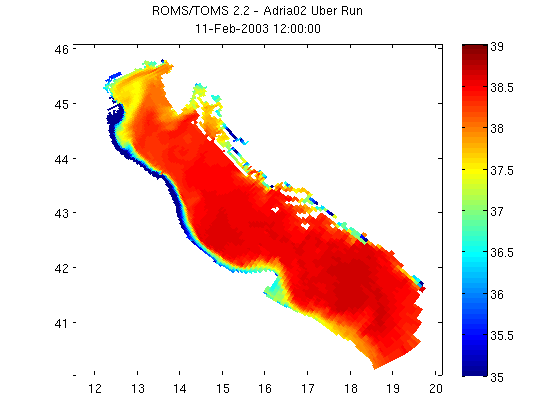

Contents
- NCGEODATASET GEODEMO_1A
- Take a look at the variables available within the dataset
- Determine the shape of the selected variable
- Create geovariable object to access data in MATLAB style indexing
- Use geovariable object to access coordinate data using MATLAB style indexes
- Use grid_interop method to return coordinate axes with standard, interoperable names
- Plot using MATLAB's pcolor
NCGEODATASET GEODEMO_1A
Method A: Read surface salinity using geovariable syntax. Takes some extra steps since you create the geovariable object before extracting data from it, but you then have all the geovariable methods available to you.
% OPeNDAP Data URL for a CF-Compliant curvilinear ROMS model dataset url ='http://geoport.whoi.edu/thredds/dodsC/examples/bora_feb.nc'; nc = ncgeodataset(url)
nc =
ncgeodataset handle
Properties:
location: 'http://geoport.whoi.edu/thredds/dodsC/examples/bora_feb.nc'
netcdf: [1x1 ucar.nc2.dataset.NetcdfDataset]
variables: {80x1 cell}
Take a look at the variables available within the dataset
To access the properties we can use typical dot notation like with ordinary Matlab structures. Here we want to get a list of the variables in the dataset we are looking at.
nc.variables
ans =
'AKs'
'AKt'
'AKv'
'Akk_bak'
'Akp_bak'
'Akt_bak'
'Akv_bak'
'Cs_r'
'Cs_w'
'Falpha'
'Fbeta'
'Fgamma'
'M2nudg'
'M3nudg'
'Tcline'
'Tnudg'
'Znudg'
'Zob'
'Zos'
'angle'
'dstart'
'dt'
'dtfast'
'el'
'f'
'gamma2'
'gls_Kmin'
'gls_Pmin'
'gls_c1'
'gls_c2'
'gls_c3m'
'gls_c3p'
'gls_cmu0'
'gls_m'
'gls_n'
'gls_p'
'gls_sigk'
'gls_sigp'
'h'
'hc'
'mask_psi'
'mask_rho'
'mask_u'
'mask_v'
'nAVG'
'nHIS'
'nRST'
'nSTA'
'ndefHIS'
'ndtfast'
'ntimes'
'ntsAVG'
'pm'
'pn'
'rdrg'
'rdrg2'
'rho0'
'salt'
'spherical'
'temp'
'theta_b'
'theta_s'
'tnu2'
'u'
'ubar'
'v'
'vbar'
'xl'
'zeta'
'lat_psi'
'lat_rho'
'lat_u'
'lat_v'
'lon_psi'
'lon_rho'
'lon_u'
'lon_v'
'ocean_time'
's_rho'
's_w'
Determine the shape of the selected variable
The size method is a method of ncgeodataset that returns the length of each of the dimensions of a given variable in the dataset. This is a lot like Matlab's internal size command, but in this case we haven't even loaded any data into memory yet. All this information comes from the netcdf-java cdm.
nc.size('salt')
ans =
8 20 60 160
Create geovariable object to access data in MATLAB style indexing
In this example we create a geovariable object from the salt variable in this dataset. This is done by calling geovariable with the name of the netcdf variable we are interested in as an argument.
salt = nc.geovariable('salt') % Now we can use Matlab style array indexing to subset the salt variable by % its indices. We can take a look at the dimension names using the "dimensions" % method: nc.dimensions('salt') % We see the arrangement of the dimensions follows the order of time, % vertical level, y, and x. % A subset of (1, end, :, :) means that we are grabbing the first time step, % the last vertical level, and the entire spatial domain of the dataset. % Note that the values that the toolbox returns are typically the same type % that they are stored as in the netcdf file so they may need to be % converted to Matlab's double. salinity = salt.data(1, end, :, :); size(salinity) class(salinity) % Also, it may be necessary to remove singleton dimensions for Matlab % commands like plotting using the function squeeze. salinity= squeeze(double(salinity));
salt =
ncgeovariable handle
Properties:
dataset: [1x1 ncgeodataset]
name: 'salt'
axes: {4x1 cell}
attributes: {6x2 cell}
ans =
'ocean_time'
's_rho'
'eta_rho'
'xi_rho'
ans =
1 1 60 160
ans =
single
Use geovariable object to access coordinate data using MATLAB style indexes
In order to plot the salt values for the first time step/first level in the dataset as a Matlab pcolor plot, we need the spatial coordinates associated with the salt values. We could grab the lat and lon coordinates in the same manner that we did with the salt variable or if the data is CF/COARDS complaint we can take advantage of the netcdf-java common data model.
% The grid method for the geovariable object is designed to grab the all % the coordinates associated with the geovariable for the given indices. % Usage is just like the data method, except the result is a Matlab % structure containing fields for each of the geovariable's dimensions and % whose values have been subset appropriately for the requested indices. salinity_coords = salt.grid(1, end, :, :)
salinity_coords =
lat_rho: [60x160 double]
lon_rho: [60x160 double]
ocean_time: 1.0958e+009
s_rho: -0.0250
Use grid_interop method to return coordinate axes with standard, interoperable names
A higher level option is to use the grid_interop method, which returns the dimensions of our geovariable using the standardized names of lat, lon, time, and z instead of the original netcdf names of the coordinate dimensions.
% In addition to a more programmatic/standardized structure returned with % grid_interop (interop for interoperability), the coordinate data is also % transformed to a more standardized form: % % - Time coordinates are converted to Matlab's datenum. % - Longitude coordinates that use a 0-360 degree scheme are converted % to the range [-180, 180]. % - Projected x and y values are converted to geographic % coordinates lat/lon. % - Stretched vertical coordinates are converted z values. salinity_coords = salt.grid_interop(1, end, :, :)
salinity_coords =
lat: [60x160 double]
lon: [60x160 double]
time: 7.3162e+005
z: [4-D double]
Plot using MATLAB's pcolor
pcolor(salinity_coords.lon, salinity_coords.lat, salinity) shading flat; colorbar; caxis([35 39]); % Add a title using the global % attribute 'title' and the date from our coordinate structure. title({nc.attribute('title'); datestr(salinity_coords.time)})